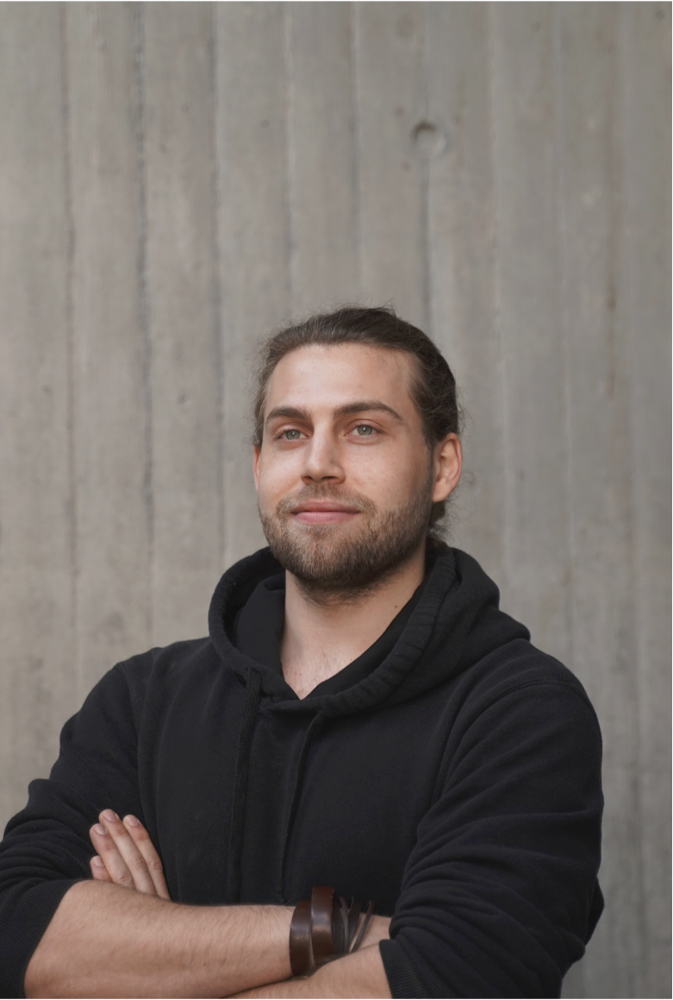

The Luckless Mage is a small independent dice atelier based in Ticino, Switzerland.
The Luckless Mage è un piccolo atelier indipendente di dadi artigianali con base in Ticino, Svizzera.

I live in Ticino, in the Italian-speaking part of Switzerland. My background is in architecture, and that way of thinking strongly influences how I approach every object I create: proportions, material, detail, atmosphere and composition all matter.
Vivo in Ticino, nella Svizzera italiana. La mia formazione è legata all’architettura, e questo modo di pensare influenza molto il modo in cui creo ogni oggetto: proporzioni, materia, dettaglio, atmosfera e composizione sono tutti aspetti importanti.
The Luckless Mage started from my love for tabletop role-playing games and handmade objects. Resin dice allow me to combine craft, design and storytelling in something small, tactile and unique.
The Luckless Mage nasce dal mio amore per i giochi di ruolo da tavolo e per gli oggetti fatti a mano. I dadi in resina mi permettono di unire artigianato, design e narrazione in qualcosa di piccolo, tattile e unico.
Every die is cast, finished and inspected by hand. I care about the visual balance of each piece, but also about the feeling it gives when it reaches the table.
Ogni dado viene colato, rifinito e controllato a mano. Mi interessa l’equilibrio visivo di ogni pezzo, ma anche la sensazione che trasmette quando arriva sul tavolo.
Crafted with patience, precision, and a little bit of chaos.
Creato con pazienza, precisione e un pizzico di caos.